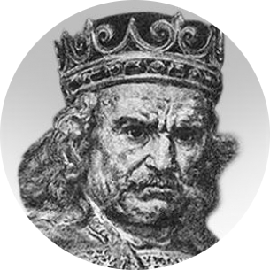
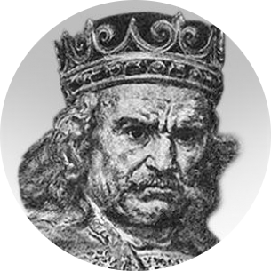
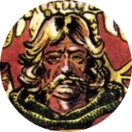
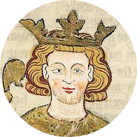
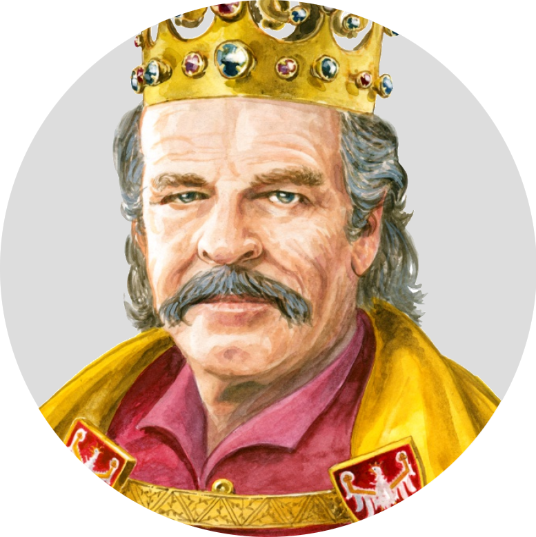
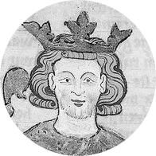
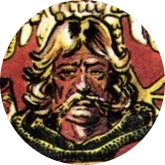
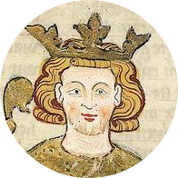
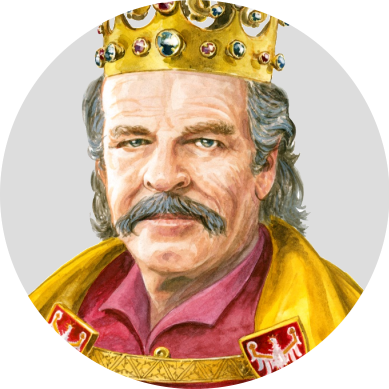
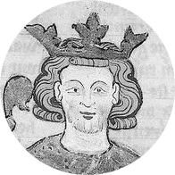

Mapa Polski za czasów Kazimierza Wielkiego
Źródło: Wikipedia

Tu pojawi się tekst!
Kliknij na dowolny punkt na mapie, by przywołać skrawek agregatu informacji bezpośrednio korelujący z danym terytorium!


 



 








Kliknij na dowolny punkt na mapie, by przywołać skrawek agregatu informacji bezpośrednio korelujący z danym terytorium!